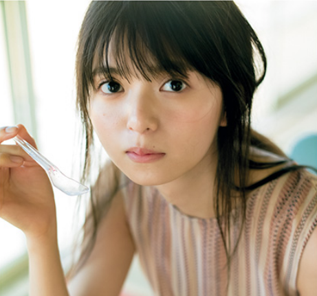

1998年8月10日、東京で日本人の父とミャンマー人の母との間に生まれる[7]。名に「鳥」の字を含む2人の兄がいることから、父親から「飛鳥」と名づけられた[8]。
2011年8月21日、乃木坂46の1期生オーディションに合格、オーディションでは西野カナの「if」を歌った[14]。中学校の友達に教えられ[8]、知人の勧めでオーディションに応募した[15]。合格後の夏に吹奏楽部を退部する[16]。
2012年2月22日、乃木坂46の1stシングル「ぐるぐるカーテン」でCDデビュー[17]。2012年8月22日発売の3rdシングル「走れ!Bicycle」のカップリング曲「海流の島よ」では、初めてセンターを務めた[18]。2015年1月10日発売のファッション誌『CUTiE』2月号では、自身初の単独表紙に抜擢され[19]、翌月、同誌創刊以来初の専属モデルに起用される[20]。2015年7月21日、乃木坂46メンバーの北野日奈子・斉藤優里と共に、ANNA SUIの2015年秋冬アジア圏ビジュアルモデルに抜擢されたことが発表された[21]。『CUTiE』が2015年9月号をもって休刊するのに伴い[22]、同じ宝島社のファッション誌『sweet』のレギュラーモデルに起用され[23]、2015年11月号から紙面に登場するとともに「乃木坂46齋藤飛鳥のFASHION BUZZ」の連載を開始した[4]。2015年10月28日発売の13thシングル「今、話したい誰かがいる」では、初の「十福神」に選ばれた[24]。
2016年4月2日、ラジオ『POP OF THE WORLD』の「HARRY'S ENGLISH CLASS」のコーナーにレギュラー出演を開始、J-WAVEのナビゲーターとしては史上最年少[25]、かつ女性アイドルグループのメンバーが務めるのは初の出来事だった[26]。2016年6月6日、15thシングル「裸足でSummer」で乃木坂46のシングル表題曲のセンターを初めて務めることが発表された[27]。2016年7月4日放送開始のテレビドラマ『少女のみる夢』では、初の主演を務めた[28]。2016年10月8日、『GirlsAward 2016 AUTUMN/WINTER』で自身が監修したAnk Rougeの衣装を披露[29]。2016年12月23日、ソロ写真集『潮騒』の発売を記念し、Instagram[30]、Twitterを開設[31]。2017年1月23日には、755を開設した[32]。
2017年1月25日には、初のソロ写真集『潮騒』が幻冬舎から発売され[33]、週間推定売上5万8215部を記録[34]。2017年2月6日付のオリコン週間ランキングのBOOK総合部門・写真集部門で1位となり、乃木坂46のメンバーとしての史上最高週間売上を記録し[注 2]、女性ソロ写真集としては歴代2位の記録となった[36][37]。発行部数は当初7万部を予定していたが[38]、10万部を突破した[39]。2017年6月7日発売のMONDO GROSSOのアルバム『何度でも新しく生まれる』の収録曲「惑星タントラ」ではボーカルを担当[40]。2018年8月8日発売の21stシングル「ジコチューで行こう!」で、15thシングル以来6作ぶりに乃木坂46のシングル表題曲の単独センターを務めた[41]。
2018年10月5日公開の台湾映画『あの頃、君を追いかけた』の日本版リメイク作でヒロイン役を務める[42][43]。この映画が台湾歴代興行収入No.1映画を原作としていることから、2018年8月15日に台湾プロ野球「Lamigoモンキーズ」対「統一ライオンズ」 戦で自身初の始球式を行った[44]。2018年12月9日放送のドキュメンタリー番組『情熱大陸』に乃木坂46メンバーで初めて出演[45][46]。同年12月、2017年1月発売の写真集『潮騒』の累計発行部数が20万部を突破したことが判明した[47]。2019年1月24日（23日深夜）放送開始のテレビドラマ『ザンビ』で主演を務める[48]。3月4日には『第5回カバーガール大賞』のエンタメ部門において2年連続受賞し、総合順位も3位となった[49]。4月15日、23rdシングル「Sing Out!」（5月29日発売）で21stシングル以来2作ぶり4度目となるシングル表題曲のセンターを務めることが発表された[50]。